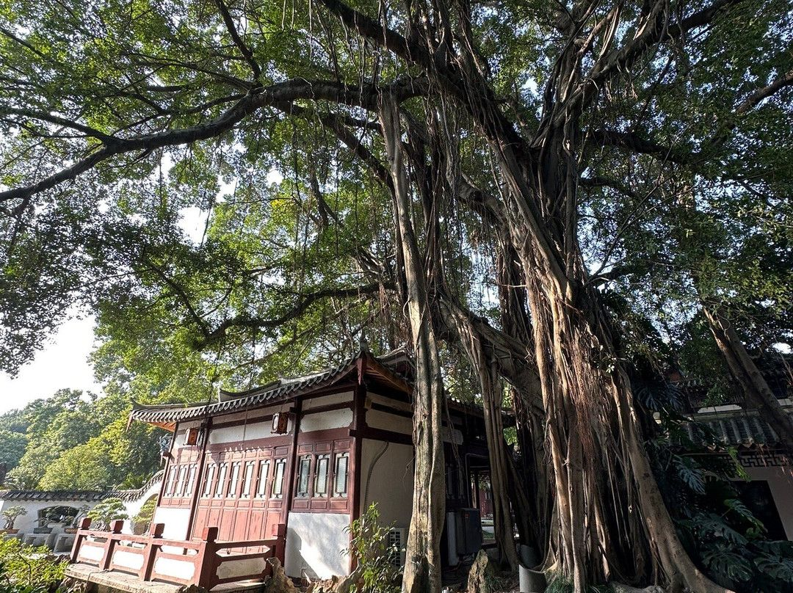

福州慢游清单：这些地方大多免费
预算有限也能好好逛福州。老城街巷、森林步道、城市园林和博物馆，串起来就是一条很有榕城味道的低预算路线。门票和开放规则会变，出发前再查一下。
三坊七巷：街巷免费
看马鞍墙古厝、找爱心榕树，重点是钻进侧巷慢慢走。部分名人故居和展馆单独收费，只逛街巷不要门票。

上下杭：晚上更有味道
沿河看老会馆、古民居和商埠遗迹。灯笼亮起来以后很好看，节奏也比热门景点松。
烟台山：老洋房和闽江落日
红砖洋房、石厝教堂、闽江观景位都在步行范围内。傍晚到，顺着夕阳一路逛到亮灯。
福道：傍晚走进森林
空中森林步道，适合散步看绿意。想少爬坡，先看好进出口再走。
福建博物院：注意预约和闭馆
想系统了解闽越历史，安排在午后很合适。提前查官方开放时间和预约要求。
西湖公园：本地人散步的地方
湖景、古榕树、开化寺都在一片园林里，不追机位也逛得很舒服。

朱紫坊：安静版老城
古巷、小桥和茶室藏在街区里，人少的时候特别适合慢走。离三坊七巷不远，可以放在同一天。
闽江之心：一段免费的江风
晚上沿江散步，看解放大桥的灯光和中洲岛远景，留一个小时吹风就够。
再多留一天：去琅岐岛看海
市区的免费景点逛得差不多了，可以把行程延到琅岐岛。沙滩散步、赶海不要门票，赶海要看潮汐、天气和现场安全提示。